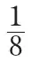
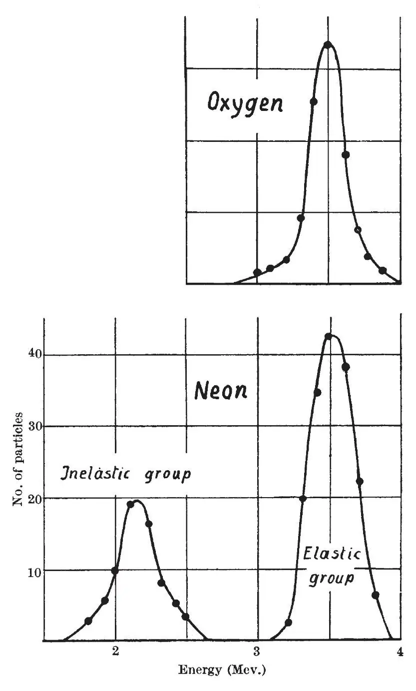
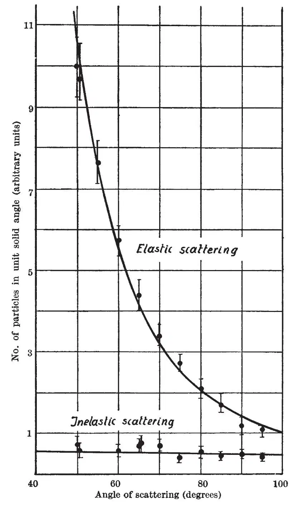

中文
中文C. F. Powell et al.
Editor’s Note
The idea that the stable nuclei of many atoms could exist in excited energetic states was first canvassed by a group of scientists who had used the newly built cyclotron at the University of Liverpool to bombard atomic nuclei such as neon. This paper shows that neon does indeed have an excited state lying some 2.5 million electron volts above that of the ground state, but that oxygen appears not to have an excited state within the range explored. Of the authors, Cecil Frank Powell and James Chadwick won Nobel Prizes for their work. Alan Nunn May, a lecturer at King’sCollege London, was compromised by his association with Klaus Fuchs, afterwards shown to be a Soviet spy. 中文
WE have recently carried out some experiments on the scattering of protons by light elements, using the proton beam provided by the Liverpool cyclotron and detecting the scattered particles by the photographic method. 中文
A proton beam of about 10–8 amperes, with a divergence of one degree, is defined by a system of stops, and emerges from an attachment to the vacuum tank of the cyclotron into the “camera” through a mica window covering a hole

in. in diameter. In the camera this narrow proton beam passes down the axis of a tube, which is interrupted for a length of 3 mm. to allow the scattered particles to emerge. A flat photographic plate is placed so that its surface is parallel to the axis of the beam and at a distance of 1 cm. from it. The protons scattered by the gas with which the camera is filled emerge through the interruption and enter the plate at a small glancing angle. This arrangement has the advantage that a single plate can contain the information for determining the probability of scattering from about 15° to 150°, providing for each angle regions containing a suitable number of tracks for counting purposes. At the same time, the energy of the scattered particle can be determined from the length of its track in the photographic emulsion. 中文
Once the difficulties of defining the beam in the stray field of the magnet had been overcome, we found that suitable exposures could be obtained for some six to eight different scattering gases per day. 中文
We have taken plates of the scattering from eleven elements which could be obtained either as elementary gases or in the form of suitable gaseous compounds. The energy of the incident particles at the point of scattering was about 4 million volts. The plates for hydrogen, deuterium and helium are satisfactory, and work is proceeding on these; but we wish to direct attention here to the inelastic scattering which accompanies the elastic scattering from the heavier elements, and gives information about the excited states of the stable nuclei in a particularly direct way. 中文
The distributions in energy of the protons scattered through 90° from the gases oxygen and neon are shown in Fig. 1. In oxygen a single peak appears, corresponding in energy to protons elastically scattered through 90°. With neon, in addition to the elastically scattered group, there is a peak at lower energy which we attribute to inelastic scattering from 20Ne. This view is supported by the fact, deduced from the analysis of the neutron spectrum of fluorine under deuteron bombardment, that 20Ne has an excited state of 1.4 Mev., for the difference in energy of the two groups of scattered particles is just of this amount. 中文

Fig. 1 中文
We have examined the variation of the probability of scattering with angle for elastic and inelastic scattering in neon, and the results are shown in Fig. 2. It will be seen that in the range from 40° to 80° the elastic scattering follows very closely that expected from pure Coulomb scattering. In contrast with this, the inelastically scattered particles are distributed spherically symmetrically about the centre of mass of the system, to within the present accuracy of the measurements. This suggests that the inelastically scattered protons have been “evaporated” from the compound nucleus formed in a close collision of an incident proton and a 20Ne nucleus. 中文

Fig. 2 中文
The absence of inelastically scattered protons in oxygen in the conditions of our experiments is evidently due to the fact that there is no excited state of oxygen below 4 Mev. The variation of scattering with angle shows, however, strong anomalies from Rutherford scattering at angles greater than about 45°, the number of scattered particles per unit solid angle varying only slowly with angle. This point will be investigated further. 中文
With the elements of atomic number greater than that of neon which we have examined, such as chlorine and argon, the ratio of the number of inelastically to elastically scattered particles is very much smaller than in the case of neon, corresponding to the decreasing probability of the protons entering the nucleus with increasing nuclear charge. It is therefore evident that it will be desirable to continue the experiments with protons of higher energy in order that the higher excited states of the light elements may become accessible to investigation, and to obtain results for elements of higher atomic number. It is clear from our experience, however, that the method is very powerful, the plates being obtained with an exposure of a few minutes and the analysis of the energy distribution of the scattered protons being complete within a few hours. Also the use of what are essentially gas targets gives the advantage of purity control and absence of effects associated with energy loss in the target. We may expect these advantages in experiments of a similar character with high-energy deuterons, where the scattered primary particles may be accompanied by disintegration products. 中文
In general, we may conclude that, using the photographic method of detection, it becomes possible to take advantage of the high-energy particles provided by the cyclotron to make experiments of the kind which have hitherto only been undertaken with direct current generators at relatively low energies. 中文
(145, 893-894; 1940)
C. F. Powell: Wills Physical Laboratory, University of Bristol.
A. N. May: King’s College, London.
J. Chadwick and T. G. Pickavance: George Holt Physics Laboratory, University of Liverpool.